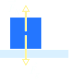

Motion on an inclined plane
Condider as in last section a block stationary on a plane. The only force acting on the block are the normal force FN acting perpendicular to the plane, and the gravitational force Fg = mg acting vertically downward.
There are situations in which the magnitude of the normal force is NOT equal to the weight of the block. Consider the figure below

When the object was lying horyzontally on the surface, the normal force exerted by the board on the block was equal to the weight of the block. If you lift one end of the plane, the weight is still directed straight down, but the normal force is still perpendicular to the surface of the plane. If we break the force of weight of the block into two components, the normal force is still equal and opposite to the component that is perpendicular to the surface, but another component of the weight is shown parallel to the surface of the inlcined plane. Even when the book was on a slight incline, it probably didn't move, because the parallel component of the weight is blanaced by the force of static friction up to a point. When the incline gets so great that the parallel component of the object's weight is greater than the maximum value for the force of static friction, the object begins to slide down the incline.
The component F⊥ = mg cos θ acting normally downwards on the inclined plane is balanced by the upward normal force FN of the inclined plane. The component F‖ = mg sin θ of the weight acting parallel to the inclined plane downwards produces motion. We shall show below that the angles θ, of the inclined plane is equal to the angle betwee the two forces.
We see that the motion on an inclined frictionless plane is uniformly accelerated with accelaration
F‖ = mg sin θ = ma ⟶ a = g sin θ
We see that hte motion on an incline is completely similar to the motion of free fall, as long as we can neglect the resistice forces. The difference is that the acceleration is smaller on the incline by a factor sin θ. We can reduce acceleration by reducing the slope of the plane. If the motion starts from rest from the origin, the law of motion is obtained by integrating twice Eq. 1 obtaining
x(t) = ½ at2 = ½(g sin θ)t2
In words: the distances travelled are proportional to the squares of the times taken to travel them.
The inline allows us to slow down the free fall motion and to study its laws over longer times, which can be measure with better precisio.
Showing the the angles are equal
△OCD is a right triangle, as is △OCE. Because
∠OCD = 90° = ∠OCE + ∠DCE = ∠OCE + α
and
∠OCE + ∠COE + 90 = ∠OCE + θ + 90=180°
we have that
∠OCE + θ=90 and ∠OCE + α = 90
so we must have θ = α. ■